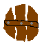
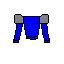
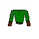
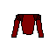

Pwnopedie
Tady jsou různé tabulky a vzorce!Třídy nepřátel
- Class 1 (Noob) - To vám nemůže ublížit. (Mějte alespoň základní vybavení)
- Class 2 (Low) - to dáte i na začátku, ale dávejte dobrý pozor! (Raději mějte vybavení alespoň 2.třídy)
- Class 3 (Loller) - Počkejte do levelu tak 5-8. (Mějte vybavení alespoň 3.třídy)
- Class 4 (Skiller) - Tohle je síla, mějte dobré vybavení a počkejte do levelu 10-12. (Mějte vybavení alespoň 4.třídy)
- Class 5 (Ownage) - Na to choďte jen se špičkovým vybavením a levelem tak 20. (Mějte vybavení alespoň 5.třídy)
- Class 6 (Pwned) - Na to ani nechoďte! (Nebo mějte vybavení 6.třídy či nějaké vybugované)
Začáteční staty podle ras
| PWN | Strength | Accuracy | Evasion | Defense |
| Člověk | 20 | 10 | 10 | 10 |
| Elf | 10 | 15 | 15 | 10 |
| Ork | 10 | 10 | 10 | 20 |
Ratia zvyšování statů podle ras
| PWN | Strength | Accuracy | Evasion | Defense |
| Člověk | 3 | 4 | 3 | 5 |
| Elf | 4 | 5 | 4 | 2 |
| Ork | 5 | 3 | 3 | 4 |
Zbraně - ratia
To jsou vlastnosti pouze základních zbraní. Zbraně 2. a vyšší třídy mají unikátní názvy a 2 a vícekrát větší attack rating a damage
Cena se zvyšuje exponenciálně - 2.třída 10krát, 3.třída 100krát a tak dále. Obrázek zůstává stejný.
| HUMAN | Attack rating | Damage | Cena | Obrázek |
| Kladivo | 10 | 12 | 20 |  |
| Meč | 12 | 15 | 30 |  |
| Žezlo | 16 | 13 | 40 |  |
| ELF | Attack rating | Damage | Cena | Obrázek |
| Krátký luk | 16 | 9 | 45 |  |
| Dlouhý luk | 11 | 14 | 60 |  |
| Double luk | 20 | 10 | 90 |  |
| ORK | Attack rating | Damage | Cena | Obrázek |
| Obouruční meč | 22 | 25 | 40 |  |
| Sekyry | 16 | 32 | 50 |  |
| Palice | 25 | 30 | 60 |  |
Názvy zbraní, brnění a štítů
| | |
| | |
| | |
 |  |  |  |
| Kladivo | Meč | Žezlo | Krátký luk | Dlouhý luk | Dvojitý luk | Obouručný meč | Sekery | Palice | Dřevěný štít | Elfská zbroj | Plátová zbroj | Těžká zbroj |
| Silné kladivo | Velkolepý meč | Honosné žezlo | Krátký lesní luk | Dlouhý luk dlouhých stínů | Dvojitý luk šlahounů | Velký obouručný meč | Těžké sekery | Zlostná palice | Dřevěný štít blokování | Ladná elfská zbroj | Tvrzená plátová zbroj | Vyztužená těžká zbroj |
| kladivo | meč | žezlo | krátký luk | dlouhý luk | dvojitý luk | obouručný meč | sekery | palice | dřevěný štít | elfská zbroj | plátová zbroj | těžká zbroj |
| kladivo | meč | žezlo | krátký luk | dlouhý luk | dvojitý luk | obouručný meč | sekery | palice | dřevěný štít | elfská zbroj | plátová zbroj | těžká zbroj |
| kladivo | meč | žezlo | krátký luk | dlouhý luk | dvojitý luk | obouručný meč | sekery | palice | dřevěný štít | elfská zbroj | plátová zbroj | těžká zbroj |
| kladivo | meč | žezlo | krátký luk | dlouhý luk | dvojitý luk | obouručný meč | sekery | palice | dřevěný štít | elfská zbroj | plátová zbroj | těžká zbroj |